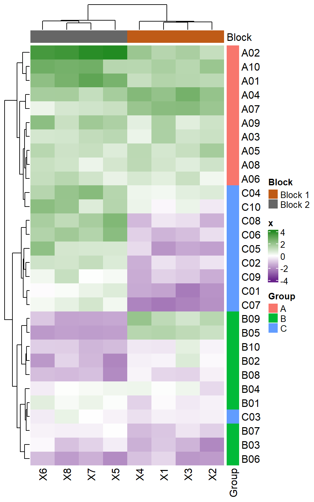

Solution
library(readxl)
library(pheatmap)
x <- read_excel("../data/simul.xlsx")
pheatmap(x[,-1], clustering_method = "ward.D2")Singular Value Decomposition (SVD) is the core of many multivariate methods. We will see in this section, on simulated data, a short description of what SVD is and does, and how to introduce “sparsity” in SVD.
The simulated data has the following characteristics:
Load the data and make a heatmap1

Run a PCA on the data with your favorite method, and plot the screeplot the individual map, and the correlation circle like below.
Principal Component Analysis is based on the Singular Value Decomposition of the data2. In a nutshell, the data matrix \(\mathbf{X}\) is decomposed by the SVD in a product of three matrices:
\[ \mathbf{X} = \mathbf{U}\mathbf{D}\mathbf{V}^\top \]
Use the R function
svdto decompose the data, and compare the result with what is given by your favorite PCA function.
I <- nrow(x)
J <- ncol(x)
centered.x <- scale(x[, -1], center = TRUE, scale = FALSE)
std.x <- sqrt(1/I * colSums(centered.x ** 2))
scaled.x <- 1/sqrt(I) * centered.x %*% diag(1 / std.x)
res.svd <- svd(scaled.x)
pc <- sqrt(I) * scaled.x %*% res.svd$v
## Compare eigenvalues
data.frame(PCA = res.pca$eig[, 1], SVD = res.svd$d ** 2) PCA SVD
comp 1 4.90980404 4.90980404
comp 2 2.59360190 2.59360190
comp 3 0.13915410 0.13915410
comp 4 0.11966049 0.11966049
comp 5 0.10452009 0.10452009
comp 6 0.06607284 0.06607284
comp 7 0.03945514 0.03945514
comp 8 0.02773141 0.02773141 PC1fromPCA PC1fromSVD U1 PC2fromPCA PC2fromSVD U2
1 3.47946475 -3.47946475 -0.286694746 -0.6705783 -0.6705783 -0.07602164
2 4.88977226 -4.88977226 -0.402898755 -1.5754272 -1.5754272 -0.17860189
3 1.48440106 -1.48440106 -0.122309038 0.5422259 0.5422259 0.06147068
4 3.50043608 -3.50043608 -0.288422705 1.5087231 1.5087231 0.17103983
5 1.76562377 -1.76562377 -0.145480726 0.8595458 0.8595458 0.09744436
6 1.06242167 -1.06242167 -0.087539530 0.2831030 0.2831030 0.03209461
7 2.50198189 -2.50198189 -0.206153852 2.1182903 2.1182903 0.24014481
8 1.16813816 -1.16813816 -0.096250170 0.7419130 0.7419130 0.08410866
9 2.07356156 -2.07356156 -0.170853636 -0.1642815 -0.1642815 -0.01862415
10 3.58444405 -3.58444405 -0.295344643 -0.1421849 -0.1421849 -0.01611911
11 -0.82141771 0.82141771 0.067681715 -0.2266340 -0.2266340 -0.02569288
12 -2.18664270 2.18664270 0.180171095 2.0535301 2.0535301 0.23280311
13 -2.93653013 2.93653013 0.241958986 -0.5464232 -0.5464232 -0.06194651
14 -0.66375621 0.66375621 0.054691003 0.4814394 0.4814394 0.05457948
15 -1.03245476 1.03245476 0.085070370 3.7299821 3.7299821 0.42285792
16 -3.83911355 3.83911355 0.316328448 0.6018542 0.6018542 0.06823057
17 -1.89011572 1.89011572 0.155738392 -0.2835366 -0.2835366 -0.03214377
18 -2.64446092 2.64446092 0.217893586 1.3511569 1.3511569 0.15317698
19 -0.62038416 0.62038416 0.051117310 3.5310557 3.5310557 0.40030617
20 -1.91970878 1.91970878 0.158176748 1.4196341 1.4196341 0.16094006
21 -2.50957431 2.50957431 0.206779439 -1.8670968 -1.8670968 -0.21166768
22 -0.65544577 0.65544577 0.054006254 -1.3526894 -1.3526894 -0.15335071
23 -1.11333699 1.11333699 0.091734761 0.1471727 0.1471727 0.01668457
24 1.66564984 -1.66564984 -0.137243252 -0.8196610 -0.8196610 -0.09292274
25 -1.13869274 1.13869274 0.093823978 -2.2951426 -2.2951426 -0.26019407
26 0.01909334 -0.01909334 -0.001573219 -2.3909485 -2.3909485 -0.27105532
27 -2.69802677 2.69802677 0.222307210 -2.4531381 -2.4531381 -0.27810558
28 0.06616711 -0.06616711 -0.005451920 -2.3093735 -2.3093735 -0.26180739
29 -1.58897654 1.58897654 0.130925662 -1.2139548 -1.2139548 -0.13762275
30 0.99748221 -0.99748221 -0.082188764 -1.0585559 -1.0585559 -0.12000560Depending on which function we use, the pre-processing steps to apply on the data before SVD, and the post-processing steps to obtain the principal components will slightly differ.
We now also have the opportunity to compare \(\mathbf{U}\) to the principal coordinates (do it, just for fun, as homework).
Now, instead of using the regular SVD, we will use its sparse variant (Guillemot et al. 2019). The goal the CSVD is now to approximate the data through a product of “sparse” matrices (i.e. matrices with a lot of zeros). The numbers of zeros are controlled with parameters that we call “radiuses” :
Apply the function
sGSVD::sparseSVDto the preprocessed data of your choice to obtain 2 sparse components, and plot them.
library(dplyr)
library(ggplot2)
library(sGSVD)
library(patchwork)
res.csvd <- sparseSVD(
X = scaled.x, ## I chose to use the scaled data
k = 2L, ## I want only 2 components
rdsLeft = sqrt(I) * c(0.5, 0.5), ## ... with medium level of sparsity
rdsRight = sqrt(J) * c(0.6, 0.6))
spc <- scaled.x %*% res.csvd$v
colnames(spc) <- paste0("SPC", 1:ncol(spc))
dat.csvd <- data.frame(
spc,
Group = g
)
dat.csvd %>%
ggplot(aes(SPC1, SPC2, color = Group)) +
geom_vline(xintercept = 0, color = "grey") +
geom_hline(yintercept = 0, color = "grey") +
geom_point() +
stat_ellipse() +
theme_bw()dat.v <- data.frame(
Var = names(x)[-1],
V = res.csvd$v,
Block = paste0("Block ", rep(1:2, c(4, 4))))
block_colors <- c("Block 1" = "#BF5B17", "Block 2" = "#666666")
p1 <- dat.v %>%
ggplot(aes(x = Var, color = Block)) +
geom_point(aes(y = V.1)) +
geom_segment(aes(xend = Var, yend = V.1), y = 0) +
scale_color_manual(values = block_colors) +
theme_bw() +
labs(x = "")
p2 <- dat.v %>%
ggplot(aes(x = Var, color = Block)) +
geom_point(aes(y = V.2)) +
geom_segment(aes(xend = Var, yend = V.2), y = 0) +
scale_color_manual(values = block_colors) +
theme_bw() +
labs(x = "")
p1 / p2